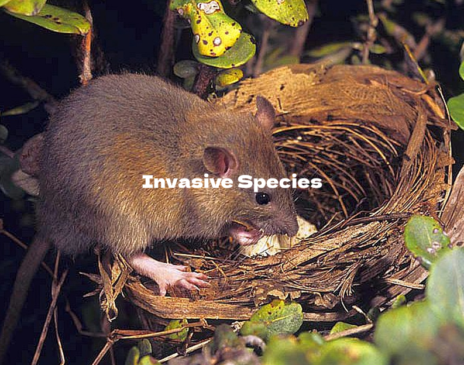

There are many factors to consider when the term biodiversity loss is being used so there is no real main problem. In New Zealand specifically, we have faced a big on-land problem which was the introduction of invasive species, predators and herbivores. This has led to a decline in numbers for many indigenous species as well as extinction which includes plants and animals. One of the most recent animals to go extinct was the South Island Kōkako which was officially declared extinct by the Department of Conservation in 2007 despite there still being ongoing reports and sightings. Another big problem revolves around the reduction of habitat quality and habitat loss.
Habitat loss in one of two main problems affecting New Zealand's biodiversity. For animals and plants, losing their natural habitats are like losing their homes and then being put in an unfamiliar environment. These plants and animals are no longer adapted or suitable to live in the new environment so they are likely to have a decrease in population or they would have to keep adapting over future generations.
The second of the two main problems is invasive species. Invasive species are organisms that are not endemic to New Zealand. These are animals and plants that have been introduced over a period of time. Since the endemic species of New Zealand hadn't been around the new introduced species, they were extremely prone to new predators and diseases. Even though not all introduced species are invasive, it still did a number on New Zealand's biodiversity.
